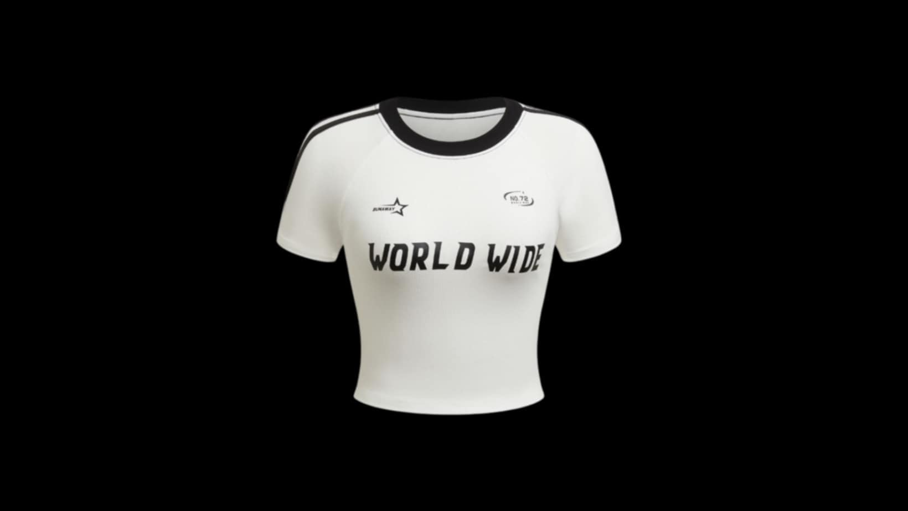
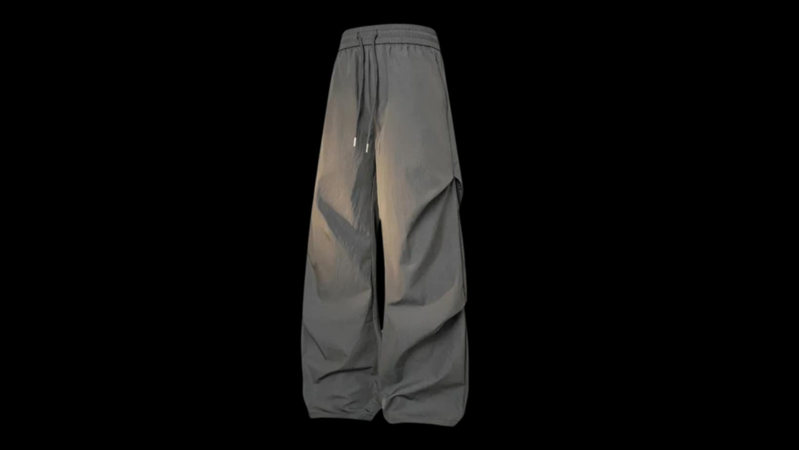
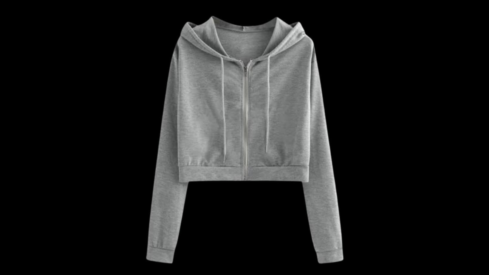
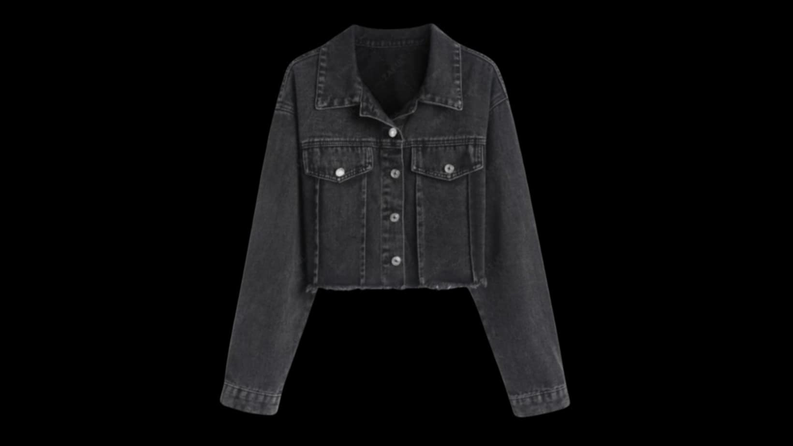
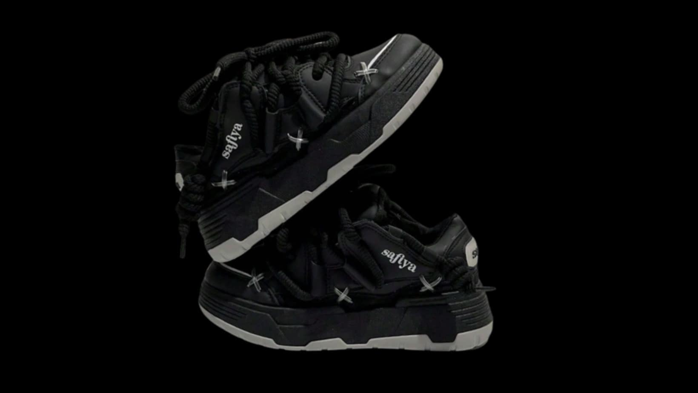
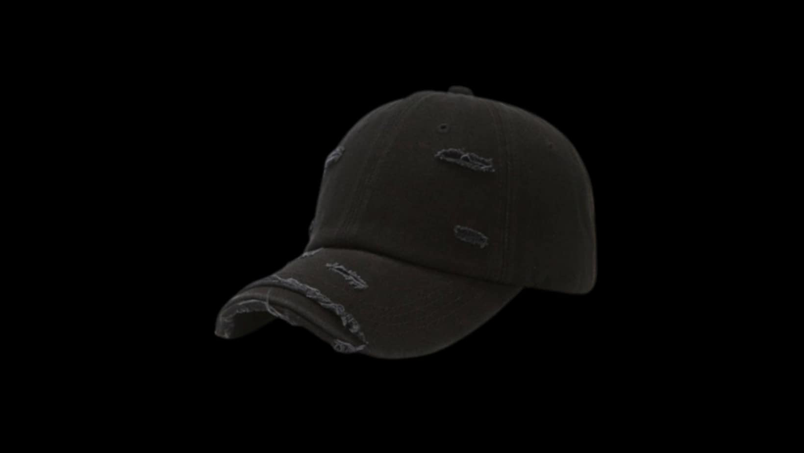
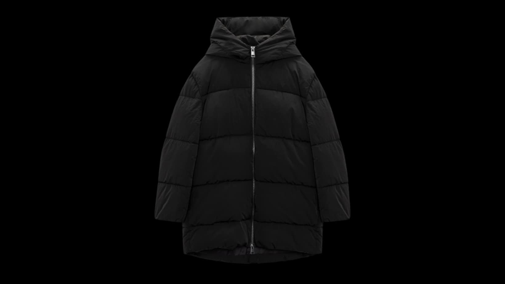
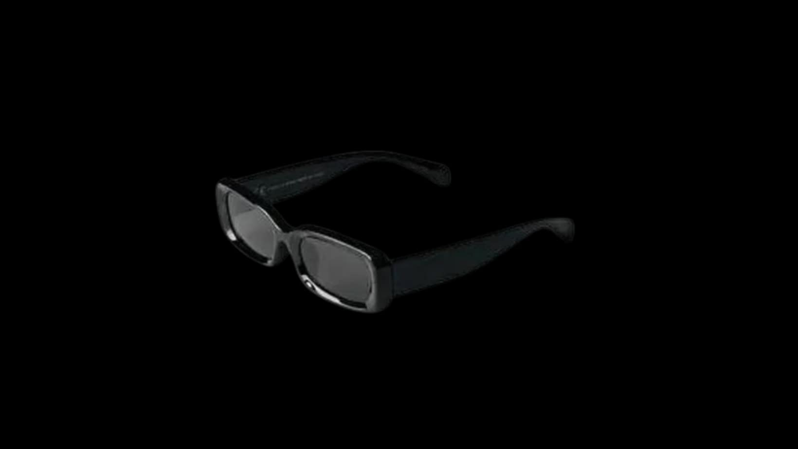
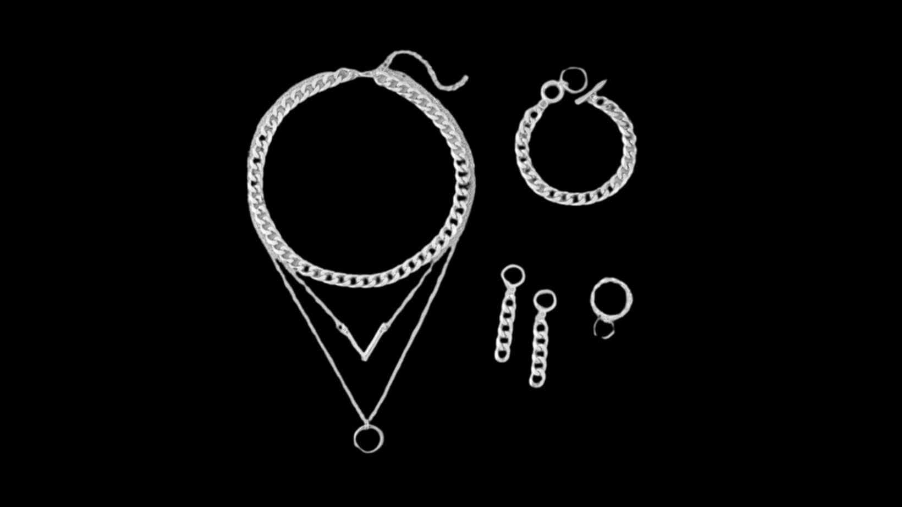
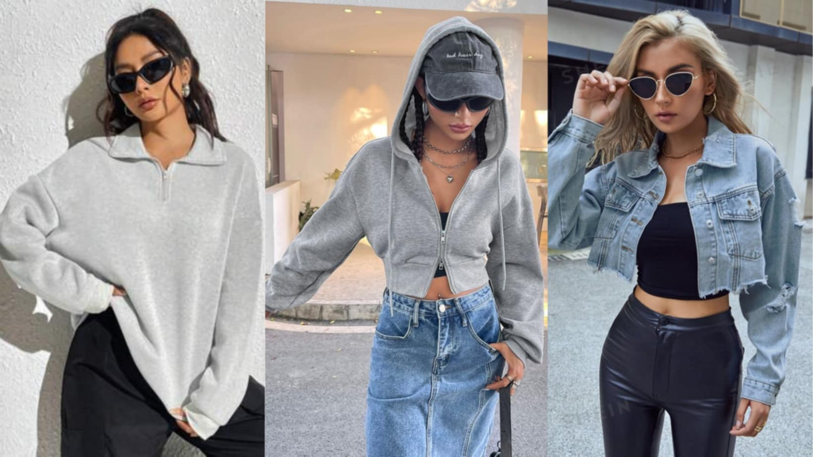

Chic in Shades: A Monochromatic Fashion Guide for Women
In the world of fashion, monochromatic modern streetwear means combining comfort and style. Modern streetwear offers a versatile and chic approach, making it easy to create outfits that are both fashionable and effortless.
Mastering a scale of gray clothes is all about balancing comfort with style. By starting with the basics, layering thoughtfully, and accessorising smartly, you can create a chic and modern look that makes a statement.
Here’s a guide to mastering modern streetwear with a scale of gray clothes.
1. Start with the Basics
The Tee
The Abo World Wide Tee - ₱349
Begin with a classic t-shirt as the foundation of your outfit. Opt for a fitted or oversized style depending on your preference. A graphic tee can add a modern touch.
Joggers
The Abo Jogger - ₱499
Pair your tee with joggers for a laid-back yet stylish look. Choose a pair with subtle details, like a tapered fit or zipper accents, to elevate the outfit.
2. Layer Up
The Hoodie
The Abo Hoodie - ₱500
Layer your tee with a hoodie for added warmth and a casual vibe. Look for hoodies with unique textures or details, such as a slight sheen or interesting stitching.
Denim Jacket
The Abo Denim Jacket - ₱899
For a more structured look, swap the hoodie for a denim jacket. This piece adds a cool edge to your outfit while keeping it monochromatic.
3. Accessorize Smartly
Shoes
The Abo Shoes - ₱999
Choose a pair of shoes to complete your streetwear look. Opt for sleek, minimalist designs that match the monochromatic theme.
Beanie or Cap
The Abo Cap - ₱299
Add a beanie or cap to enhance the street style. This accessory not only adds a layer of coolness but also keeps your look cohesive.
4. Statement Pieces
Statement Coat
The Abo Coat - ₱1599
For a standout look, invest in a statement coat. Whether it’s a sleek trench or an oversized wool coat, this piece can elevate your streetwear ensemble.
Bag

The Abo Bag - ₱499
A bag can add both functionality and style to your outfit. Opt for a design that complements the monochromatic theme without overwhelming it.
5. Finishing Touches
Sunglasses
The Pair of Square Sunglasses - ₱199
Complete your look with a pair of sunglasses. Choose a sleek, modern design to keep your style on point.
Subtle Jewelry
The Abo Silver Accessories - ₱999
If you like accessories, simple pieces, such as a silver chain or minimalist earrings, can enhance your outfit without distracting from the monochromatic theme.
Embrace the shades of gray and let your streetwear shine with effortless sophistication. Learn to combine comfort and style. Download the Abo Store app or browse our Abo Collection Online to discover how you can transform your wardrobe.